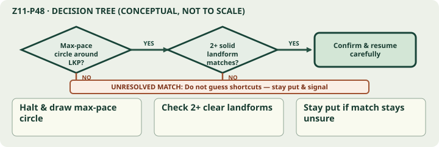

Z11-P48 · Navigation, weather and rescue · Adapted historical material
Establish a deliberate relocation check when expected landmarks vanish
Follow a calm structured relocation sequence before committing to any movement once position confidence drops.
When it applies · Suspected off-route moment while visibility, daylight and terrain still allow safe assessment.
Equipment · Paper/offline map, baseplate compass, watch and group roster.

Actions
- Stop on stable ground and mark your exact spot visually (drop pack in view) so you do not wander while thinking; review your last 100% confirmed checkpoint and exact elapsed travel time since leaving it.[N09, T06, ED]
- Draw a mental maximum-travel radius around that last confirmed point based on realistic pace, then orient the map cleanly to check whether two unmistakable surrounding landforms or a clear backtrack match one spot inside that circle.[N03, N08, N09, ED]
- Backtrack along unmistakable fresh tracks or a clearly signed trail ONLY if you are 100% sure it leads cleanly back to your last confirmed checkpoint; otherwise hold position and prepare to signal.[N09, T06]
Failure recognition · Picking a random compass direction to "cut over to the highway" from an unverified starting dot, crossing into unfamiliar drainages.[N09, T06]
Verify · Confirm either a positive two-feature match inside your realistic travel circle or a disciplined stay-put shelter and signaling decision.[N09, T06, ED]
Stop or change course · Never guess cross-country shortcuts out of position uncertainty; if relocation fails after one calm check, stay put, shelter and contact rescue.[N09, T06, E05]
Evidence and editorial notes
- E05 · NWS · What To Do If You're Caught in a Winter Storm (current web edition)
- Section: Outside and find shelter · Conditions: Cold, wet or windy winter conditions
Support: Block wind, stay dry and keep off cold ground. Keep exposure reduction separate from making a fire.
Limitations: Improvised windbreaks do not provide rated thermal protection or snow-load capacity. · Conflicting evidence: None; aligns with CDC-H.
Editorial note: Separates wind, ground, and moisture heat-loss pathways. · Specialist reviewer: Cold-weather shelter specialist
Primary source · checked 2026-11-24 - N03 · USGS · What is a Topographic Map (current web edition)
- Section: What is a Topographic Map > Contours and Relief · Conditions: Matching three-dimensional terrain shapes to two-dimensional contour lines
Support: Closed contour rings denote peaks or depressions (hachured), V-patterns point uphill in valleys/drainages and wide spacing marks gentle slopes while tight spacing marks cliffs or steep grades.
Limitations: Dense forest canopy or snow drifts can obscure subtle terrain features shown on the map. · Conflicting evidence: None; core topographic terrain-association evidence.
Editorial note: Supports ridge, valley, saddle and handrail terrain-interpretation cards. · Specialist reviewer: Navigation and cartography
Primary source · checked 2026-11-24 - N08 · NOAA NCEI · Magnetic Declination (current web edition)
- Section: Magnetic Declination > Local Anomalies and Compass Interference · Conditions: Using magnetic baseplate compasses near metal, electronics or iron-rich rock
Support: True north, grid north and magnetic north differ by local declination; additionally, nearby phones, vehicles, knives, steel poles and localized magnetic rock (e.g., northern Minnesota iron formations) deflect compass needles erratically.
Limitations: Never assume a compass needle reads true magnetic field while held near gear, vehicles or iron ore. · Conflicting evidence: Aligns with B014-P13 and B014-P14.
Editorial note: Grounds declination conversion, metal-clearance and magnetic-anomaly cards. · Specialist reviewer: Navigation and geophysics safety
Primary source · checked 2026-11-24 - N09 · NPS · Outdoor Emergency Plan (current web edition)
- Section: Outdoor Emergency Plan > Signaling, Lost-Person Protocol and SAR Handoff · Conditions: Lost or overdue party awaiting search and rescue
Support: Stay put once lost unless immediate danger requires moving to nearby safer ground; preserve footprints/clues, make visible contrast signals in open clearings, answer whistle/voice calls and stay ready for responder instructions.
Limitations: Unplanned wandering expands search radius exponentially and delays rescue contact. · Conflicting evidence: None; reinforces B014-P16, P17 and P20.
Editorial note: Core evidence for lost-person psychology, signaling and SAR coordination cards. · Specialist reviewer: Search and rescue
Primary source · checked 2026-11-24 - T06 · NPS · Outdoor Emergency Plan (current web edition)
- Section: If you get lost or hurt; call for help · Conditions: Outdoor US emergency
Support: Communicate location, last known point, situation and needs. Stay put when unable to establish a safe route unless immediate danger requires movement.
Limitations: Cell signal is unreliable in backcountry terrain; pre-trip plans bridge communication gaps. · Conflicting evidence: None; core lost-person decision rule.
Editorial note: Foundation for stay/signal/move and dispatch handoff cards. · Specialist reviewer: Search and rescue
Primary source · checked 2026-11-24
Source lineage · B014 r01 slot R09 and NPS emergency plan; new manuscript · Classification · Adapted historical material.